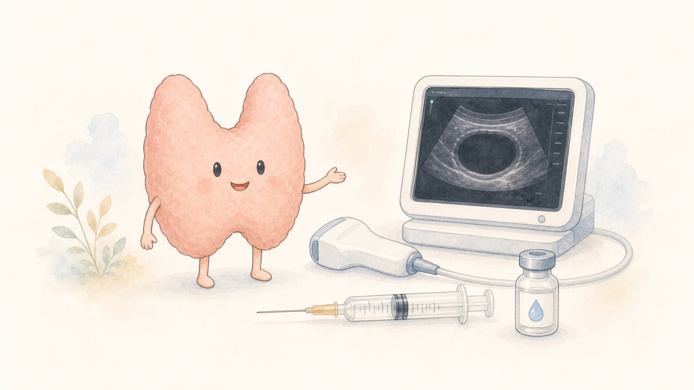

以熱能處理目標組織
甲狀腺射頻消融 RFA
在超音波引導下，將能量集中於目標結節，使治療區域在後續時間逐漸縮小。是否適合，不能只看結節大小，也要確認診斷、症狀、位置與替代方案。
- 先確認影像與必要的細胞學評估
- 理解觀察、手術與微創治療的差異
- 治療後仍需依計畫持續追蹤
FEATURED TREATMENTS
特色醫療不等於「看到結節就直接治療」。射頻消融與酒精消融處理的病灶特性、治療原理與適合情境並不相同；在做選擇前，仍須整合超音波、必要的細胞學結果、症狀、位置與其他治療方案。
本頁協助比較兩個入口，不會替個人判斷適合哪一項治療。
CHOOSE A TOPIC
以熱能處理目標組織
在超音波引導下，將能量集中於目標結節，使治療區域在後續時間逐漸縮小。是否適合，不能只看結節大小，也要確認診斷、症狀、位置與替代方案。

較常用於適合的囊性病灶
針對經評估適合的囊性甲狀腺病灶，先抽出囊液，再讓酒精作用於目標區域，降低再次蓄積的機會。實質性或混合型結節未必適合相同處理。